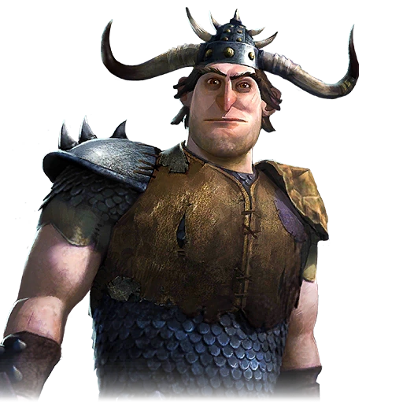

Bras droit d'Alvin, combattant redoutable
| Rôle | Bras droit d'Alvin |
| Affiliation | Tribu des Indésirables |
| Particularité | Combattant fruste mais efficace |
Sauvage est le lieutenant le plus fidèle d'Alvin le Traître. Moins intelligent que son chef, il compense par une force brutale et une loyauté indéfectible. Il exécute les ordres d'Alvin sans questionner et représente la menace physique directe lors des affrontements avec les dragonniers de Beurk.